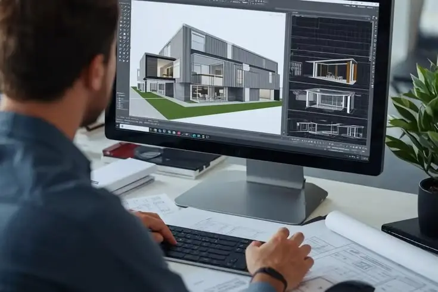
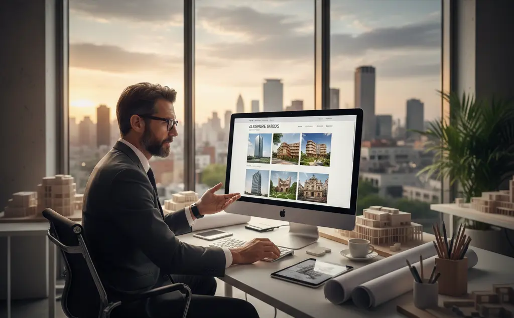
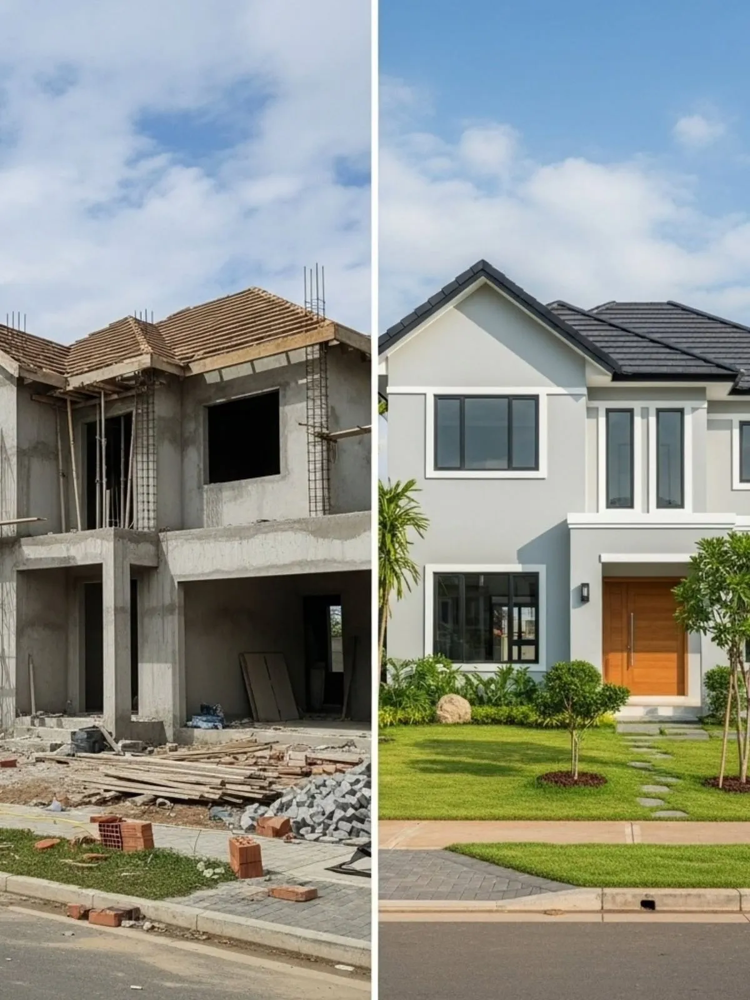

Création Web
Création Web
18 février 2026

Alizée Web, spécialiste de la création de site internet professions libérales, crée des sites internet pour architectes avec un portfolio projets immersif, des pages dédiées à vos missions — maîtrise d'œuvre, rénovation énergétique, permis de construire, extension maison — et un positionnement SEO sur les requêtes à forte valeur. Résultat : vous attirez les particuliers qui cherchent un architecte pour rénover, et les promoteurs qui cherchent un maître d'œuvre pour leurs chantiers d'envergure.


Depuis la réforme MaPrimeRénov' et l'obligation de DPE pour les transactions immobilières, des milliers de particuliers cherchent chaque mois un architecte pour les accompagner dans leur rénovation énergétique. Ces requêtes — "architecte rénovation énergétique", "architecte audit thermique", "architecte maison passivhaus" — sont à fort potentiel commercial et peu exploitées. Aucun site concurrent ne traite cet angle comme un argument central.
Au-delà de l'énergie, vos futurs clients particuliers cherchent de l'aide pour leurs procédures administratives : "architecte permis de construire", "architecte extension maison sans permis", "architecte déclaration préalable". Ces requêtes longue traîne génèrent des prospects prêts à engager des honoraires pour déléguer des démarches complexes. Des pages dédiées par type de mission vous positionnent exactement sur ces recherches.
En parallèle, votre site doit parler différemment aux promoteurs et maîtres d'ouvrage professionnels. Leur langage — maîtrise d'œuvre, BIM, CCAP, CSPS, ERP — n'est pas celui d'un particulier qui cherche à rénover sa cuisine. Un site avec deux entrées distinctes, un langage adapté à chaque audience et un portfolio segmenté par type de projet capte les deux cibles sans les mélanger.

+40%
De demandes d'accompagnement architectural pour rénovation énergétique depuis MaPrimeRénov'
2 cibles
Particuliers rénovation/extension + promoteurs/entreprises : deux messages, un seul site
3D & BIM
Un portfolio avec visuels 3D convertit 2x plus qu'un portfolio photo seul
Nous identifions vos missions principales (maîtrise d'œuvre complète, rénovation, construction neuve, design intérieur, urbanisme), vos cibles (particuliers, promoteurs, collectivités), votre zone géographique et vos projets références pour structurer un site à deux entrées et un portfolio segmenté par type de réalisation.
Nous créons votre site avec un portfolio immersif haute définition, des pages dédiées par mission avec leur angle SEO précis, un focus rénovation énergétique et MaPrimeRénov', une double entrée particuliers/professionnels et un blog architecture alimenté régulièrement. Chaque page est optimisée pour convertir le bon type de prospect vers la bonne prise de contact.
Votre site génère des demandes de particuliers qui cherchaient précisément votre expertise en rénovation, permis de construire ou extension, et des contacts de promoteurs attirés par la qualité de votre portfolio BIM. Moins de demandes hors budget, plus de projets à valeur ajoutée. Nous suivons vos positions Google et enrichissons votre portfolio au fil de vos nouvelles réalisations.
Un architecte travaille avec deux types de clients très différents : le particulier qui rénove sa maison et cherche quelqu'un pour l'accompagner dans ses démarches administratives et techniques, et le promoteur ou maître d'ouvrage professionnel qui cherche un maître d'œuvre expérimenté pour un chantier d'envergure. Ces deux audiences n'ont pas les mêmes attentes, ni le même vocabulaire, ni les mêmes critères de choix.
Alizée Web crée votre site avec deux entrées distinctes, un portfolio segmenté par type de projet (maisons individuelles, rénovations, projets tertiaires, opérations immobilières) et des pages de mission spécifiques. L'angle rénovation énergétique est traité en profondeur : MaPrimeRénov', audit thermique, isolation, DPE, labels BBC et RE2020. Vous vous positionnez sur un marché en forte croissance où vos concurrents sont absents en SEO.
Le portfolio est le cœur de votre site — il doit être immersif, rapide et professionnel. Nous intégrons vos photos haute définition, vos rendus 3D et vos plans dans des fiches projets structurées avec contexte, surface, localisation, budget et année. Un portfolio bien présenté rassure instantanément et élimine les objections de prix avant même le premier contact. Nous appliquons la même rigueur pour chaque profession libérale, que ce soit un site internet commissaire de justice ou un site internet expert-comptable.

Devis gratuit sous 24h — Portfolio immersif — Double cible particuliers et professionnels
Création Web
 SEO Local
SEO Local
 Google Business
Google Business